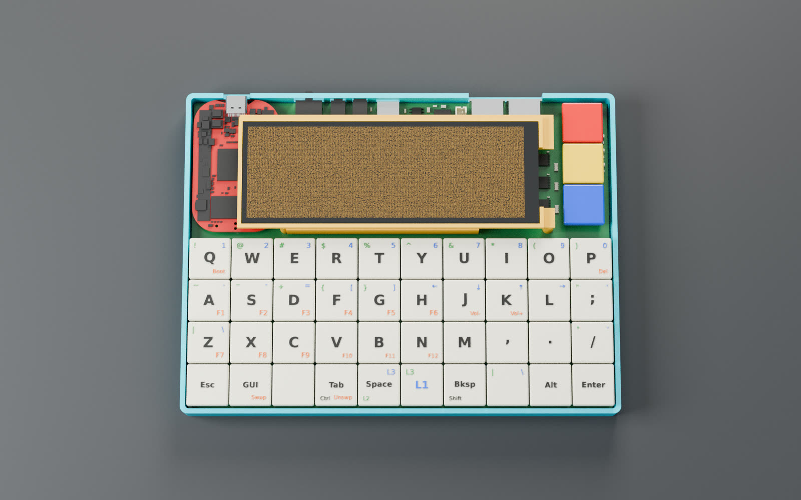
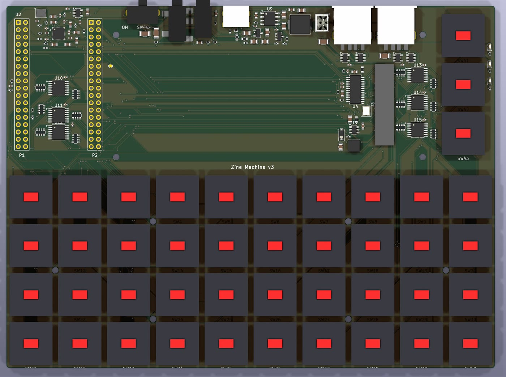
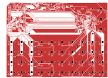
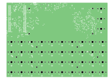
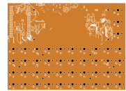
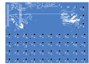
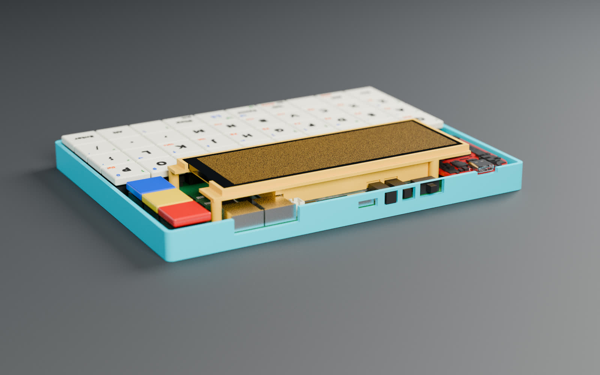
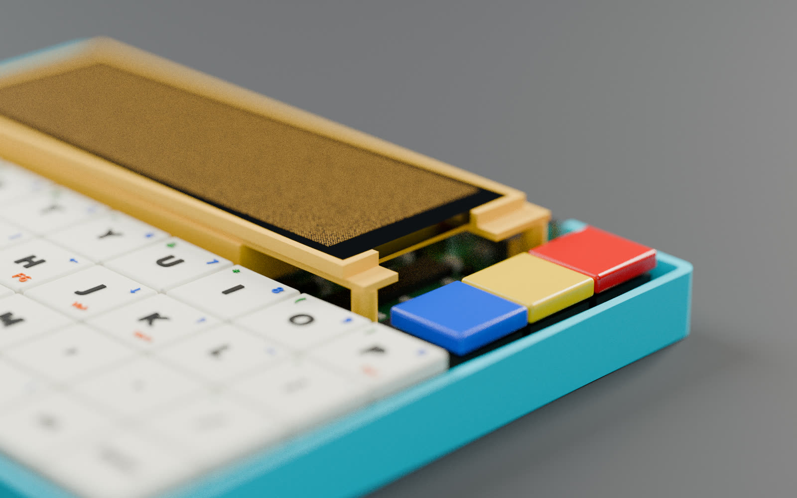
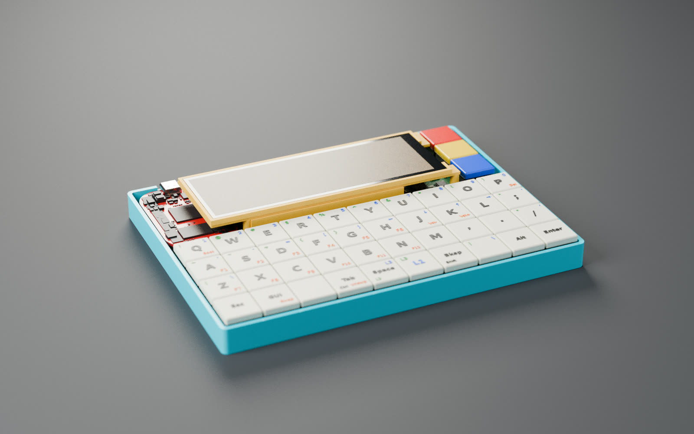

The v3 assembly, in 3D zinemachine0 @ 8fed12c
The same model the Blender renders come from: the routed main board exported from KiCad, with the FreeCAD tray, display chassis, battery and PocketBeagle envelope fitted around it, and keycaps carrying the stock QMK layers. Drag to orbit, pinch or scroll to zoom, and tap a dot for detail.
What it is v3
| Computer | PocketBeagle 2 Industrial: TI AM6254 (4 × Cortex-A53 + Cortex-M4F), 1 GB DDR4, 64 GB eMMC, −40…85 °C. Face-down on low-profile 3.55 mm sockets, USB-C out through the rear wall. |
|---|---|
| Keyboard | 40 Kailh Choc v1 keys, 4 × 10 ortholinear with CFX caps, plus three red / yellow / blue mode keys. Switches soldered, no hot-swap. |
| Key scanning | The PocketBeagle’s Cortex-M4F reads every key directly through six chained 74HC165s on MCU-domain pins. No matrix, no diodes, full rollover. |
| Display | 4.58″ 320 × 960 IPS bar (ST7701S), run landscape at 960 × 320. RGB565 over the AM62’s VOUT0 with 3-wire SPI init; TPS61165 backlight boost. |
| USB | FE1.1s hub on USB1; two rear USB-A ports, 500 mA each through TPS2051B switches. |
| Power | 1S LiPo (about 9 × 40 × 70 mm, 2.5–3 Ah) under the display; IP5306 charger and 5 V boost with its own rear USB-C; slide switch; charge, power and boot LEDs. |
| Audio | ES8388 codec over I2S: TRRS headset jack (headphones + mic) and a TRS line out. |
| Main board | 170 × 126 mm, 4 layers, every assembled part on the top side. 188 parts, 210 nets. Routed, DRC clean. |
| Enclosure | Open printed tray, 175.2 × 131.2 × 12.5 mm, plus a printed display chassis that holds the panel and clamps the battery. About 21 mm tall overall. |

Electrical architecture from DESIGN_v3.md
v2 put an ATmega32U4 on the board to run QMK and plugged it into the PocketBeagle over USB. v3 drops it, along with 40 diodes and 40 hot-swap sockets: the AM6254 already has a spare microcontroller core. The M4F shifts in all 43 keys through a 74HC165 chain and hands them to Linux, so the keyboard needs no matrix and has no ghosting.
PocketBeagle 2 header map
| Pin | Use | Pin | Use |
|---|---|---|---|
| P1.01 | +5V_SYS in | P2.01 | I2S BCLK (MCASP0_ACLKX) |
| P1.04 | I2S LRCK (MCASP0_AFSX) | P2.03 | I2S data to codec (AXR1) |
| P1.06 | backlight PWM (EHRPWM0_A) | P2.05 | M4F key chain QH (MCU_GPIO0_5) |
| P1.08 | headset detect (GPIO1_14) | P2.07 | M4F spare, test pad |
| P1.09 / P1.11 | USB1 D− / D+ to the hub | P2.09 / P2.11 | I2C3 SCL / SDA (IP5306 0x75, ES8388 0x10) |
| P1.12 | I2S data from codec (AXR2) | P2.10 | panel RESET |
| P1.14, P2.23 | 3V3 out (key chain, pull-ups, LEDs) | P2.25 / 29 / 31 | panel 3-wire SPI |
| P1.26 / P1.28 | M4F key chain CLK / SH-LD | RGB + sync | VOUT0, unchanged from v2 |
| P1.35 | boot LED (GPIO0_88) | GND | all GND pins |
Spare: P1.02, P1.03, P1.10, P1.13, P1.19, P1.21, P1.23, P1.25, P1.27, P1.30, P1.32, P1.34, P2.19, P2.27, P2.36.
Main board KiCad 10 (Backplane fork) · 4 layers

kicad-cli pcb render. All assembled parts are on this side.



kicad-cli pcb export svg, drill holes shown). In1 is the ground plane; signals route on the other three, each filled with a ground pour. The wide bus across the top of F.Cu is the display’s parallel RGB.| Rules | All SMD parts on F.Cu, nothing assembled on the bottom; through-hole only for switches, jacks, USB-A, slide switch, headers and battery connector. Tracks and gaps ≥ 0.127 mm (0.10 minimum), vias 0.3 / 0.45 mm, copper 0.3 mm from the edge. Every BOM line must name an MPN the fab stocks. |
|---|---|
| Height limits | ≤ 1.5 mm between the PocketBeagle’s sockets (the 74HC165s and codec live there); ≤ 10 mm under the display chassis, whose top sits 17.2 mm above the tray floor. Board top at 6.1 mm. |
| Battery zone | No parts in a 74 × 40 mm keep-out under the LiPo pouch. |
| USB | Differential pairs routed as pairs, 90 Ω where practical. |
Mechanical FreeCAD 1.1.4 · Blender
Everything is a parametric FreeCAD script, run headless in the VM. zine_concept.py lays out the whole device; the board spec takes its positions from it (case → KiCad: kx = cx + 71.775, ky = 85.475 − cy). The tray and display chassis are separate printable parts with fab files, and a fit check loads the routed board’s STEP back into the mechanics.
Tray
175.2 × 131.2 × 12.5 mm · 2 mm wall, 1 mm floor, 3 mm corner radius · board on bosses 4.5 mm up · rear-wall openings for every port · MJF PA12, 36.3 cm³.
Display chassis
127.3 × 47.1 × 15 mm · flush frame for the panel · boxes and clamps the LiPo · four M2 posts on the board, screws from under the tray · MJF PA12, 12.5 cm³.
PocketBeagle envelope
A light model built from BeagleBoard’s own: the real outline, every other part as a conservative height-map box, the sockets, and the USB-C with its mouth and a USB-IF-maximum plug keep-out.



The display, before the hardware exists zinemachine-sim
The panel is 960 × 320 at 16 bits per pixel, which is an unusual shape to design software for. zinemachine-sim is a Docker dev kit that gives you that exact screen in a browser: an arm64 Debian userland, Xvfb at 960 × 320 × 16, and an LD_PRELOAD shim that turns /dev/fb0 into shared memory, so framebuffer apps run unmodified. Save a file and the app rebuilds and restarts in about a second. Every clip below is the display’s own pixels, recorded from the simulator.
Three kinds of app
sim term | xterm in Terminus 32 px: 60 × 10 characters. -s 24 gives 80 × 13, -s 16 120 × 20. On the device: setfont ter-v32n. |
|---|---|
sim fb | /dev/fb0 at 960 × 320, RGB565, with mmap, FBIOGET_* and FBIO_WAITFORVSYNC. |
sim sdl | An X display of exactly 960 × 320, no window manager. On the device SDL2 uses kmsdrm. |
How close to the device?
Same: resolution and RGB565 colour (banding shows), arm64 and a Debian userland, fbdev ioctls and mmap, the SDL2 API, the text grid at a given font size.
Different: X11 instead of KMS/DRM; no real VT, so the console is xterm rather than fbcon; and your CPU, not a 1.4 GHz Cortex-A53, so expect the device to be several times slower.
The build pipeline agents → scripts → CAD → git
Nobody drew this board by hand. AI agents work inside a Backplane hub in an arm64 Ubuntu VM on a Mac, each thread in its own git worktree, and they drive KiCad, FreeCAD and Blender from the command line. The design lives as code and text: a spec, a Python description of the circuit, and generator scripts that rebuild the schematic, board and mechanics from it. The mechanics and the board check each other in a loop until the routed board fits.
1 · A sandbox that holds the whole toolchain
backplane-vm boots Ubuntu 26.04 arm64 under QEMU with Apple’s Hypervisor.framework (near-native speed) and provisions it: the Backplane hub as a systemd user service, Claude Code, gh, FreeCAD 1.1.4 (pinned AppImage), Blender, and the Backplane KiCad fork, which ships x86_64 only and so is compiled in the VM (a few hours, resumable). Only SSH reaches the Mac; the hub listens on the VM’s loopback, and you reach it through an SSH tunnel with a one-time, ten-minute pairing invite.
2 · The design as data
DESIGN_v3.md fixes the outline, every connector position, the pin map, the rules and what “done” means. design.py encodes all 188 parts with value, footprint, MPN, LCSC number and pin-to-net map. gen_fp.py writes custom footprints from the parts’ drawings (and simple STEP bodies via FreeCAD), gen_sch.py draws an A1 schematic with one coloured box per block, and gen_pcb.py places the board. checknet.py proves KiCad’s netlist matches design.py net for net.
3 · Routing in passes
KiCadRoutingTools lays the In1 ground plane, routes the USB pairs as differential pairs, then everything else with rip-up, inside the fab’s limits. finish.sh loops: kicad-cli DRC lists the open connections, connect.py closes them with A* on a 0.1 mm grid across three copper layers, ripping up where it must, and the router re-routes what was ripped. Ground stitching and island repair (gnd_vias, gnd_bridge, gnd_fix) edit the open board in a running KiCad over its IPC API, then refill. plot.py renders each copper layer for review.
4 · Fit, render, publish
The board’s STEP goes back into FreeCAD: fitcheck_board.py places it against the tray, chassis, battery, panel and PocketBeagle envelope; clashes send parts back to the concept. The result exports as one GLB with 893 named parts, which Blender renders on the VM’s CPU, and which this page compresses with gltf-transform (dedup, join by material, meshopt: 15 MB → 1.5 MB) for three.js. The display recordings come from zinemachine-sim in Docker on the Mac, and one plays on the 3D model’s screen above.
Open items before anything is fabricated
- Main board: silkscreen cleanup, fab outputs and README (stage 4 of 4).
- Charger: plain IP5306 (charge LEDs work with the device off; used now) or IP5306-I2C (Linux can read the charge state).
- Power budget is tight: about 2.3 A worst case against the IP5306’s 2.1–2.4 A.
- Check the PJ-327A headset jack’s pin assignment with a plug and a meter.
- The fab stocks only 75 of the GCT USB1046 USB-A sockets.
- Choose the battery cell and the slide switch; decide what the three mode keys do.
- Software: M4F key-scan firmware and an RPMsg-to-uinput service; device-tree overlay for the panel, codec and hub.
- From v2: confirm the display FPC pinout, contact side and fold length against a real panel.
History
| v2 | bancouver40 with an ATmega32U4 running QMK/Vial, hot-swap sockets and a translucent SolidCraft case, the PocketBeagle 2 as its USB host. The v2 interactive page is still up. |
|---|---|
| v3 | This design: the keyboard controller folded into the PocketBeagle’s M4F, battery, hub, audio, and an open printed tray. |
Credits & licences
bancouver40: keyboard design, PCB, case and firmware by ChrisChrisLoLo (sporewoh), GPL-3.0; zinemachine0 is a fork of it. PocketBeagle 2 / Industrial: hardware, schematic, drawings and 3D model by BeagleBoard.org, model CC BY-SA 4.0. KiCad libraries (CC BY-SA 4.0 with exception), the Backplane KiCad fork, KiCadRoutingTools, Freerouting (v2), FreeCAD, Blender, SolidCraft (v2 case), three.js (MIT), gltf-transform and meshoptimizer (MIT), QMK/Vial. Design work assisted by Claude Code. zinemachine0 and zinemachine-sim are GPL-3.0; backplane-vm is MIT. Renders and the 3D model on this page come from zinemachine0 at commit 8fed12c.